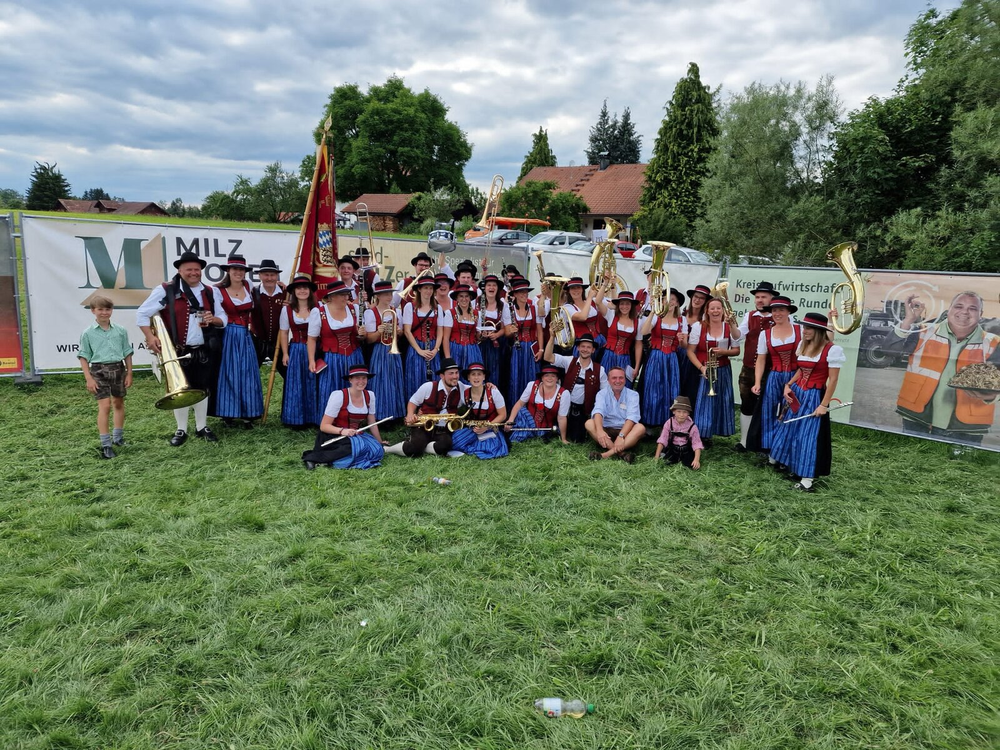
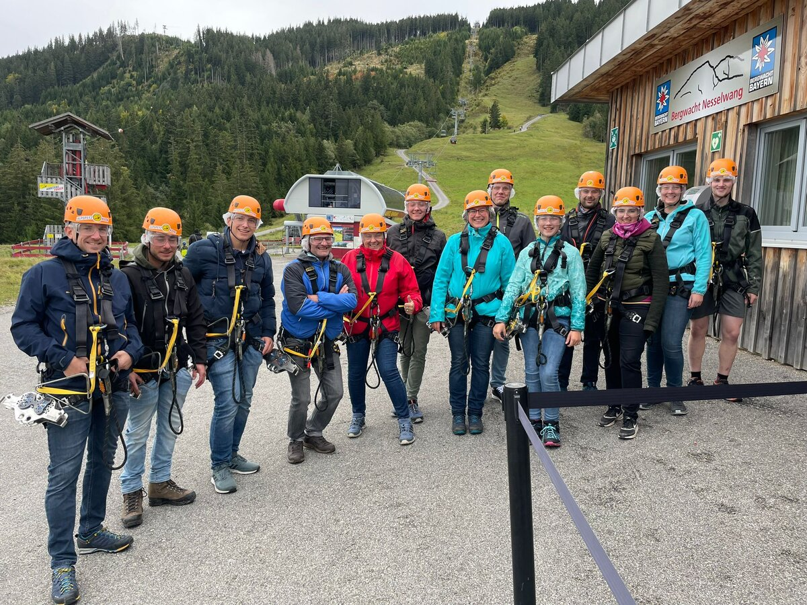

Blasmusik mit Herz & Leidenschaft.
Von traditionellen Märschen bis zu modernen Arrangements — rund 50 Musikantinnen und Musikanten, die mit Freude zusammen musizieren.
Freitag · Probe 20:00 Uhr
Scroll
Wer wir sind
Blasmusik seit Generationen.
~50
Aktive Musikanten
100+
Jahre Tradition
5+
Auftritte / Jahr
Eindrücke
Bilder aus dem Vereinsleben
 Festumzug · Tracht & Fahne
Festumzug · Tracht & Fahne
 Konzert · Publikum
Konzert · Publikum

Gemeinsam unterwegsKalender · 2026
Nächste Termine
Lust auf Blasmusik?
Ob aktiv mitspielen, als Jungmusikant starten oder den Verein unterstützen — wir freuen uns auf dich!
Simmerberg im Allgäu
Proben: Freitag · 20:00 Uhr
mukasi@gmx.net